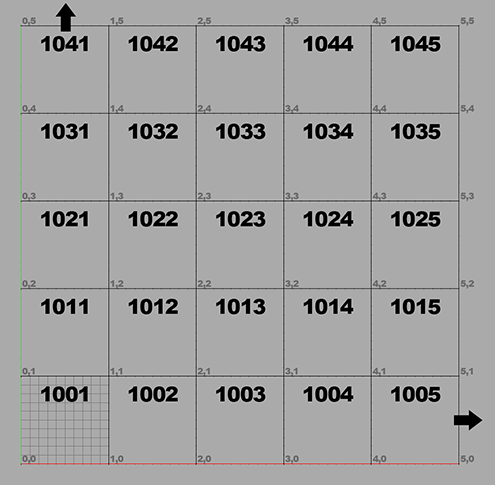

Shading and Texturing
Using Substance Painter
avik.c@whistlingwoods.net
Why do we texture?
The first and foremost aim of texture use is to show the material from which the real object is made. To be more accurate to textute is to show definite physical light properties of the modeled object.
Texuring along with lighting calculations needed to construct a realistic and functional 3D scene via a render engine.
Render Engines
- Redshift
- Mental Ray
- Render Man
Types
- CPU Rendering vs GPU Rendering
- Biased(physically accurate) Vs Unbiased Rendering Vs Hybrid
What does a given Render engine take as input?
- It needs geometry.
- It needs a material bound to that geometry to describe how to render that geometry. How that geometry responds to light. What colour to shade the geometry with.
- It needs lights in the scene.
- It needs a camera. Everything is relative to the camera. All your geometry is transformed in to the space of the camera. Camera rules everything.
EXAMPLE OF BIASED RENDER ENGINE:
- V-Ray
- Redshift
- Mental Ray
- Render Man
- Micropolygon
Unbiased rendering methods include: Path Tracing Light tracing Bidirectional path tracing Metropolis light transport (and derived Energy Redistribution Path Tracing
EXAMPLE OF UNBIASED RENDER ENGINE:
- Arnold
- Maxwell
- Octane
- Indigo
- FStorm
GPU-accelerated renderers can be unbiased, like Indigo or Octane, or biased like Redshift.
UV Mapping
It is a two part process
- UV unwrapping
- UV layout

UV mapping is boring
- Its very repetative
- It takes time
- Its a thankless job
- There exists an alternative
Ptex
- Walt Disney Animation Studios introduced Ptex in 2008.
- Per-face Texturing
Pros
- No UV assignment is required! Ptex applies a separate texture to each face of a subdivision or polygon mesh.
- The Ptex file format can efficiently store hundreds of thousands of texture images in a single file.
Cons
- Not transferable.
- Cannot work in 2D softwares like photoshop.
I'm sorry but UV is the Industry Standard
- There are some tools and plugins available to ease the pain
- Maya Bonus tools
- Unwrella
- Unwrap Pro
- Headus
- Magic UV
UV Layout UDIM

Shading
Consists of three main parts.
- Material
- Shader
- Texture
What is a Material?
- The material typically contains all the properties of how the model looks.
- Sometimes in a 3D software a material and shader mean the same thing.
What is a Shader?
- A shader is an operation performed at render-time.
- The process of assigning the colour to a pixel by the renderer is called "shading".
- The shader has various input parameters that allows for artistic control over what the shader does (like diffuse colour, roughness, etc.).
Did you know!
- Lights also have shaders that determine how those lights are to be defined: area, point, IES profiles, light intensity based on direction, etc.
- Cameras also have shaders. You can define the lens shape among other things.
What is a Texture?
- In cg speak, a texture is an image (usually) that shaders use to assist in the shading process.
- the most common use of textures is to project them onto your geometry and apply them as a color map.
- Two Types
- Color (Diffuse)
- Greyscale (Height, Roughness)
Shaders
RSL Surface Sader
surface constanttest1(float Kfb = 1) { color surfcolor = color(0.3, 0.9, 0.5);
Oi = Os; Ci = Oi * Cs * surfcolor * Kfb; }
OPENGL Shaders
PBR Shaders
- Physically based rendering (PBR) is an approach in computer graphics that seeks to render graphics in a way that more accurately models the flow of light in the real world.
- Surfaces
- Volumes
- Light
https://academy.substance3d.com/courses/the-pbr-guide-part-1
Thank You
- avik.c@whistlingwoods.net